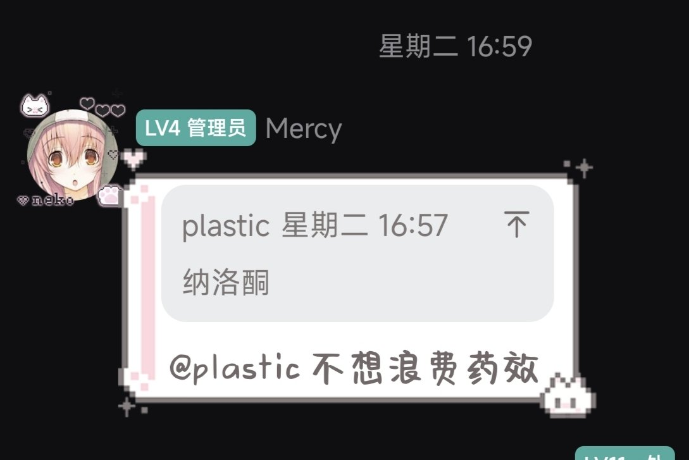
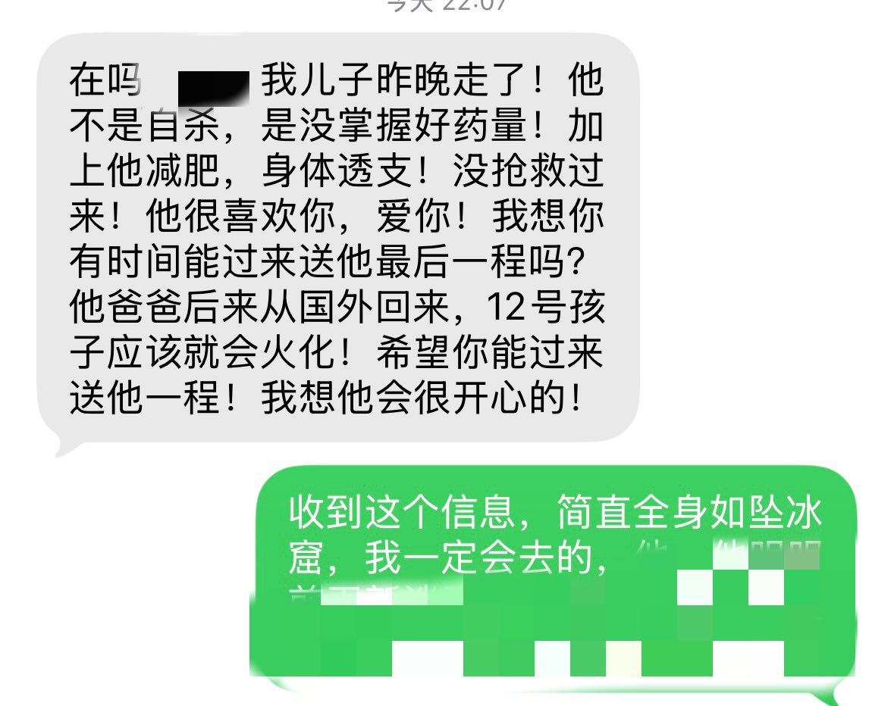

yella Iwase～
@yelai431420
劝阻其使用纳洛酮无果


#dpt不好体验分享
@liyfn130024
讣告：
Mercy 又名小猫 真实姓名于逸铭
已于昨天去世，原因是赛奈普汀1g过量，抢救不及时去世。
你辛苦了小宝宝，来到这个世界。
会飞升幸福的天堂的，等我。
我很痛苦，很痛苦，彻底的崩溃了，3天后我会去参加他的葬礼。 https://t.co/2DupHyaJUJ